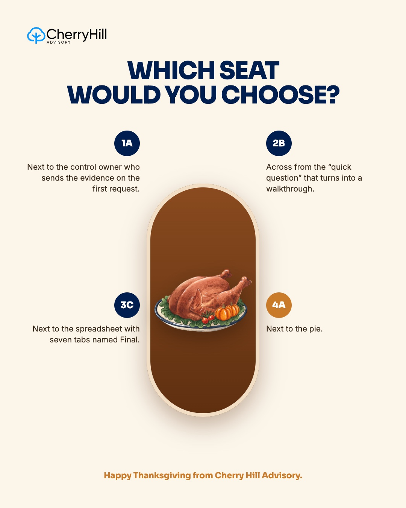

Six new Cherry Hill LinkedIn posts for November: three Diligent articles and three trend posts, each shown with its caption.
1Mon Nov 9 · Cherry Hill LinkedIn · Diligent article: agentic AI for audit teams
Diligent's logo sits beside ours on this card. We can take it off if you'd rather not use it.
CH
Cherry Hill Advisory
Internal audit and risk advisory
Nov 9 · 🌐
An AI agent can probably draft this quarter's PBC request list. The question worth asking first is who checks it.
Jay Cameron at Diligent, our partner on this year's AI Series, explains how risk and audit agents work in plain terms. Say you ask for the request list. The agent drafts it, brings it back to you, and waits for your input before it does anything else.
His line is the one we'd underline: the auditor makes every call.
2Thu Nov 12 · Cherry Hill LinkedIn · Trend Reel: "I'm an internal auditor, but I'm also a..."
CH
Cherry Hill Advisory
Internal audit and risk advisory
Nov 12 · 🌐
Ask an internal auditor what they do all day and you'll get a long pause, because the title covers a dozen jobs.
This year a lot of us picked up one more, which is giving assurance over AI tools that are still changing month to month. That's what Frontier IA is built around, with a full track on auditing and governing AI.
3Mon Nov 16 · Cherry Hill LinkedIn · Mike's Diligent article: AI in the board audit reporting chain
Text-only post, no graphic.
CH
Cherry Hill Advisory
Internal audit and risk advisory
Nov 16 · 🌐
The audit committee usually gets two pages from internal audit, and AI can draft those pages now.
That's helpful right up until someone asks a follow-up, and in his latest piece for Diligent, Mike Levy explains why. A summary can read so smoothly that nobody notices it has run ahead of the evidence, and then it takes two days to find the document behind the answer.
His fix is to keep the significance ratings and the conclusion with the chief audit executive, and to link every claim back to its source.
4Mon Nov 23 · Cherry Hill LinkedIn · Mike's Diligent article: AI in control testing
Diligent's logo sits beside ours on this card. We can take it off if you'd rather not use it.
CH
Cherry Hill Advisory
Internal audit and risk advisory
Nov 23 · 🌐
Say you hand an AI agent a control test with 12,000 items, and it runs the comparisons.
Its last comparison will be as careful as its first. What it can't decide is what counts as an exception, or whether a few exceptions add up to a deficiency. Mike Levy's piece for Diligent explains where that line sits, and why most agent pilots stall when nobody owns the exception queue.
His advice is to run one control both ways for a full cycle and study the items where the two disagree.
5Wed Nov 25 · Cherry Hill LinkedIn · Trend: "Which seat would you choose?" Thanksgiving edition
CH
Cherry Hill Advisory
Internal audit and risk advisory
Nov 25 · 🌐
Happy Thanksgiving from all of us at Cherry Hill Advisory.
We put together a seating chart for the long weekend, and you can probably guess which seat we'd pick.
Thank you to the IIA chapters, co-sponsors and audit teams we spent time with this year, at conferences and on a lot of lunchtime webinars. We hope you get a few quiet days with the people you love.
Which seat are you taking?
#HappyThanksgiving#InternalAudit#Grateful

👍 Like💬 Comment🔁 Repost➤ Send
6Mon Nov 30 · Cherry Hill LinkedIn · Trend: "Zoom in for a sign"
CH
Cherry Hill Advisory
Internal audit and risk advisory
Nov 30 · 🌐
If you had to zoom in to read that, here's the reminder at full size: CIAs need their 2 ethics CPE hours done by December 31.
Frontier IA on December 8 has a two-hour ethics block on accountability for automated decisions, bias and transparency, and where professional judgment still has to sit. Those questions come up in AI audits now, so the hours count toward work you're already doing.